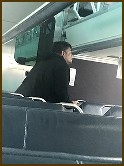

Two consistent experiences have been riding the Metra Rail Milwaukee District Line and the CTA. When leaving my husband always reminds to keep my purse zipped up and do not talk on my cell phone as he drops me at Metra. My second week at DePaul, I was pick pocketed on the escalator at Union Station after exiting the train. I happened to look down and there was my Ventra Card, DePaul ID and my driver’s license in a young man’s hands. Hmmm! I promptly snatched them back and replied thank you, believing somehow, I had dropped them. When I arrived at the top a young guy told me that I had been pick pocketed. He said the guy originally bumped into him and then me. Perhaps because I ride the Metra more, I’ve had more unpleasant experiences.
On the prior day before the Tree of Life Synagogue shooting in Pittsburgh experienced a white supremacist terrorist attack. I listened, while looking in the face of an older business person railing on people of Jewish descent. I waited for him to come for me, but somehow, he did not. I’ve also had great experiences on Metra. My neighbor’s daughter is an Engineer on my line, and I have often ridden her train. She has shared with the Conductors that I was her neighbor growing up, so they are always really nice to me.
A few weeks ago on my train ride home, I was 15 minutes out from my stop when the guy in the picture came into my car. He walked past me and began jumping up and down and shadow boxing. I quickly exited the car, followed by another lady. We both moved into the next car, where he promptly followed us. He went to the back of the car and continued to squat down, jump up and shadow box. Finally I arrived at my stop, I told the lady goodbye and good luck. After exiting, the Muhammed Ali wannabe promptly got off behind me. Just another day is transit land.
Rounded Images
top